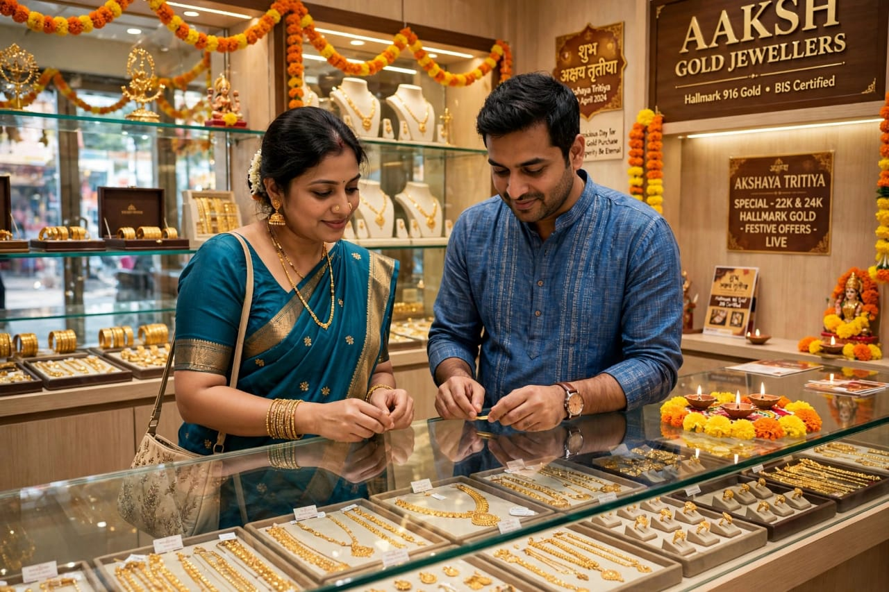

About Akshaya Tritiya
Akshaya Tritiya is an important festival observed by Hindus and Jains in India. It is celebrated on the third lunar day of the bright half of the month of Vaishakha. The word "Akshaya" means something that does not diminish, so the day is traditionally considered auspicious for beginning new activities.
On this day, people offer prayers, visit temples and perform charitable activities. Many families consider it a suitable occasion for starting new work, making important purchases and performing religious ceremonies. Customs and traditions may differ from one region to another.
Akshaya Tritiya is also associated with several stories and traditions in Hindu and Jain culture. People prepare special foods and sweets and spend time with family members. The festival is connected with ideas of prosperity, charity, devotion and new beginnings.
Special Foods

Puran Poli
A traditional sweet flatbread prepared during festivals.

Kheer
A traditional sweet dish made with milk, rice and sugar.

Laddu
A popular Indian sweet prepared for special occasions.